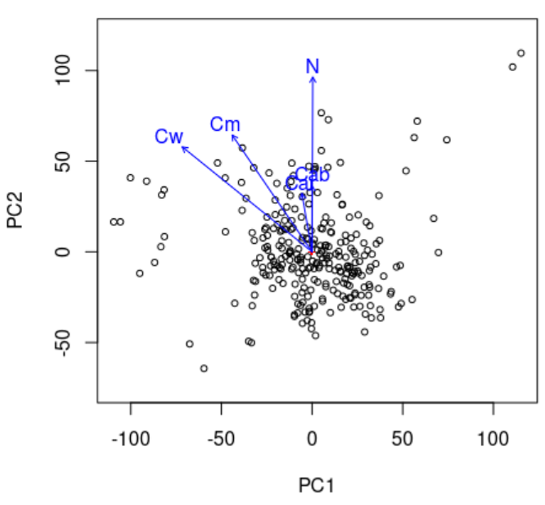
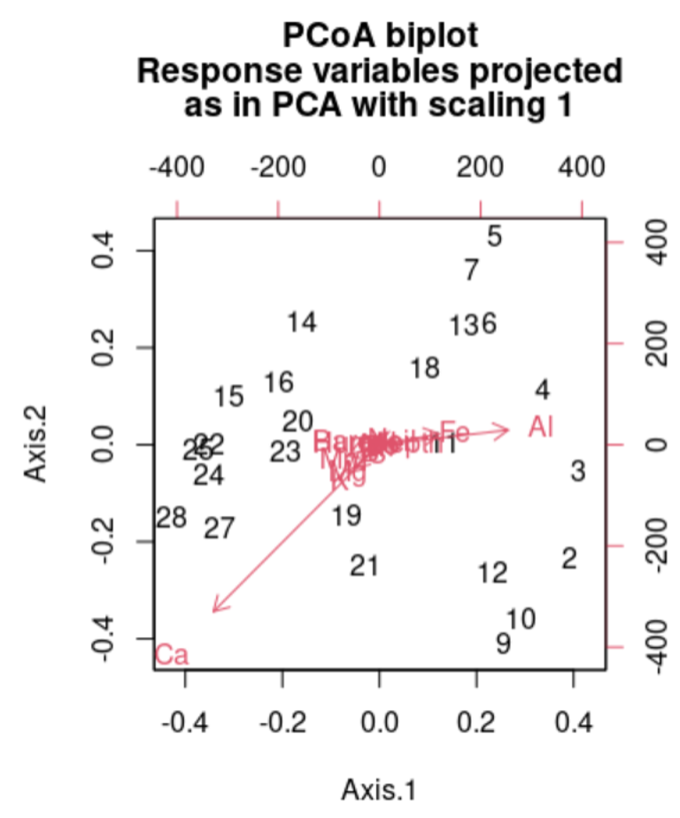
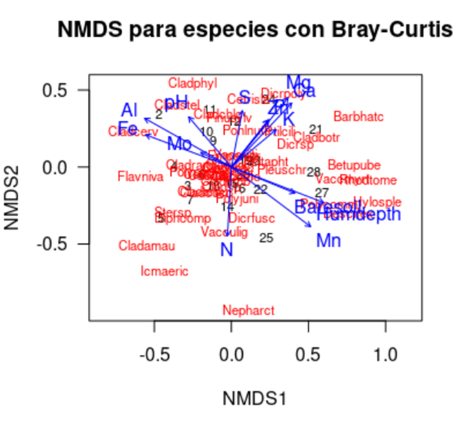
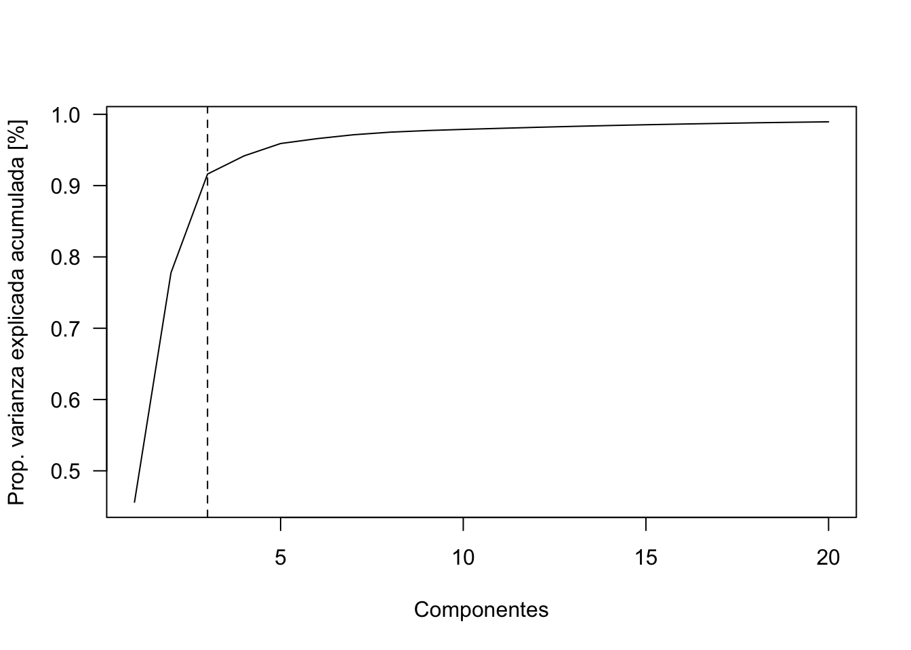

library(dplyr)
Attaching package: 'dplyr'The following objects are masked from 'package:stats':
filter, lagThe following objects are masked from 'package:base':
intersect, setdiff, setequal, unionEl mundo en el que vivimos no es de una sola dimensión, es multivariante, con múltiples dimensiones, con muchos datos cruzándose todo el tiempo y con medidas de más de una variable aleatoria.
Hay dos aplicaciones típicas de este tipo de estadística:
Reducción de información (Feature reduction) – Ordenación de la información (Ordination)
Clustering – Agrupación de clases de datos homogéneos
Pero hay muchas más.
La maldición de la dimensionalidad

Análisis del conjunto de datos para resumir sus principales características, mediante métodos estadísticos y visuales.

Pueden hacerse con conocimiento del dominio o algorítmicamente
Una métrica que mide la distancia entre un par de entidades dados los dos puntos x e y, una función métrica o de distancia debe cumplir las siguientes condiciones:
| Nombre Condición | Condición |
|---|---|
| No negatividad | d(x,y) >0 |
| Identidad | d(x,y)=0 <=> x=y |
| Simetría | d(x,y)=d(y,x) |
| Desigualdad triangular | d(x,z) <= d(x,y)+d(y,z) |
Todos los métodos de clustering y ordination tienen una cosa en común, para poder llevar a cabo las agrupaciones necesitan definir y cuantificar la similitud entre las observaciones. El término distancia se emplea para cuantificar la similitud (o disimilitud; dissimilarity) entre observaciones.
Se calcula la “distancia” en una matriz de todos contra todos.
Si se representan las observaciones en un espacio p dimensional, siendo p el número de variables asociadas a cada observación, cuanto más se asemeje dos observaciones, más próximas estarán. Por eso se emplea el término distancia. La característica que hace del clustering y ordenación métodos adaptables a escenarios muy diversos es que puede emplear cualquier tipo de distancia, lo que permite al investigador escoger la más adecuada para el estudio en cuestión. A continuación, se describen algunas de las más utilizadas.
Se desprende del teorema de Pitágoras
d_E(P_1, P_2)=\sqrt{(x_2-x_1)^2+(y_2-y_1)^2}
Distancia entre dos puntos como la sumatoria de las diferencias absolutas entre cada dimensión. Esta medida se ve menos afectada por outliers (es más robusta) que la distancia euclidiana debido a que no eleva al cuadrado las diferencias.
Cuando las variables con las que se pretende determinar la similitud entre observaciones son de tipo binario, a pesar de que es posible codificarlas de forma numérica como 1 o 0, no tiene sentido aplicar operaciones aritméticas sobre ellas (media, suma…)
La distancia Bray-Curtis se refiere a la diferencia total en la abundancia de especies entre dos sitios, dividido para la abundancia total en cada sitio.
La ecuación que permite el cálculo de la distancia de Bray-Curtis: aquí, se comparan dos muestras j y k:
BC_{jk}= 1- \frac{2\sum_{i=1}^{p}min(N_{ij}, N_{ik})}{\sum_{i=1}^{p}(N_{ij}+N_{ik})}
Donde es la abundancia de una especie i en la muestra j y la abundancia de la misma especie i en la muestra k. El término min (.,.) Corresponde al mínimo obtenido para dos conteos en las mismas muestras. Las sumas ubicadas en el numerador y denominador se realizan sobre todas las especies presentes en las muestras. N_ {ij}N_{ik}
La distancia Bray-Curtis tiende a resultar más intuitiva debido a que las especies comunes y raras tienen pesos relativamente similares, mientras que la distancia euclidiana depende en mayor medida de las especies más abundantes. Esto sucede porque las distancias euclidianas se basan en diferencias al cuadrado, mientras que Bray-Curtis utiliza diferencias absolutas. El elevar un número al cuadrado siempre amplifica la importancia de los valores más grandes
En resumen:
Resumen, ¿Cuál distancia usar?
La distancia ideal a utilizar va a depender completamente de los datos que estamos usando.
Si los datos son continuos y no presentan outliars la distancia euclidiana es suficiente.
Si la distribución de las variables es no-normal y presenta outliars, es mejor la distancia de Manhattan.
En caso de que los datos presentan valores nulos (ej., presencia/ausencia de especies), entonces es mejor usar Jaccard.
Si las variables son proporciones o porcentajes entre cero y uno, por ejemplo abundancia de especies o otro tipo de frecuencias, es buena la distancia de Bray-Curtis.
Por supuesto, existen muchos otros índices de distancia que pueden buscar y utilizar.
En ecología es bastante normal que dispongamos de datos que están conformados por un conjunto de sitios o localidades, para los cuales tenemos una serie de variables. Estas variables puede ser cada especie o cada condición que levantemos en el sitio, de esta forma, un sitio va a tener tantas variables como especies o factores ambientales se registren.
Ordenamos las parcelas en función de la cantidad de individuos de dos especies, de esta forma la distancia a la que se encontraba cada comunidad nos daba información sobre cuanto se parecían. Aunque esta es una forma fácil de ordenar nuestras comunidades, esta forma de graficar es solo posible con dos o máximo tres especies, pero pocas comunidades tienen únicamente tres especies, cuando tenemos más de tres especies es necesario buscar otras formas de ordenación que nos permitan rescatar el gradiente ambiental.
De esta forma, el objetivo de los métodos de ordenación es representar los datos a lo largo de un número reducido de ejes ortogonales, construidos de tal manera que representan, en orden, las principales tendencias de los datos (Borcard, Gillet, and Legendre 2011).
Las ordenaciones pueden ser indirectas y directas (constreñidas). Las ordenaciones indirectas pueden ser utilizadas para interpretarse visualmente o asociadas a otros métodos, como regresión. Por su parte, las ordenaciones directas permiten hacer asociaciones con variables explicativas, generando un orden constreñido pobasado en unas variables explicativas.
Por ejemplo, si se registran las abundancias de diez especies en diferentes sitios, entonces la variación total entre sitios podría ser representada gráficamente en diez dimensiones (i.e., una por especie). Obviamente, esto no es muy eficiente. Sin embargo, si sólo hubieran unas pocas tendencias o gradientes claves compartidas entre las especies, entonces se podría derivar un conjunto más pequeño de ejes (por ejemplo, dos) que resumiera la mayor parte de la variación en el conjunto de datos.
El término “ordenación” refleja la intención original del enfoque - identificar gradientes únicos (es decir, respuestas ordenadas) de variables que podría reflejar los procesos ecológicos.
Para reducir la dimensionalidad de las variables dentro de una análisis estadístico (i.e., tener menos variables), hay dos formas principales:
Feature selection: Seleccionar variables; ejempo: Stepwise selection
Feature extraction: Extraer la información relevante de cada variable, y crear un número menor de nuevos componentes con esa información
Esta técnica de ordenación es sencilla de interpretar, las distancias entre las muestras son interpretadas directamente como distancias euclidianas. Este método de ordenación es ampliamente usado con datos ambientales, donde el valor de cero es informativo, aunque se puede usar en datos biológicos previo una transformación. El PCA al usar distancias euclidianas es fuertemente afectado por ceros, y detecta relaciones lineares de los datos.
Además de las limitantes de los dobles ceros, otro inconveniente que puede tener esta ordenación, es que la proyección de las distancias euclidias en un plano puede distorsionar algunas distancias en otros planos.
Los gráficos de dispersión de la ordenación PCA, los objetos (las comunidades) se representan como puntos y las variables se muestran como flechas.
Usa matrices de disimilaridad en base a distancias EUCLIDIANAS! Distancias lineales.
Número de Componentes Principales Creados es = el Número de variables iniciales.
PCA ordena de forma decreciente los componentes de acuerdo a cuánta información de las variables originales contiene. Ej., PC1 es siempre el que contiene más información, y PCn prácticamente nada (muchas veces los últimos componentes se consideran ruido! ): información en los datos no relevante en relación al contexto general de su organización e interacción.
Número óptimo de componentes principales
Normalmente el criterio para seleccionar el número deseado de componentes es graficando la varianza acumulada de los eigenvalues y elegir el punto de inflexión (elbow). La idea es reducir la dimensionalidad de los datos, por lo que un número bajo de componentes es deseado. Además, normalmente los componentes altos (i.e., baja varianza) en general tienen mucho ruido.
Ejemplo: datos foliares de pigmentos (clorofila, carotenoides, contenido de agua, …) con datos hiperespectrales tomados por espectroscopia de campo (datos de reflectancia de teledetección = 2051 variables)
Interpetración Gráfica de PCA
Scatterplot de los dos primeros componentes, PC1 y PC2, los que contienen justos cerca del 75% de la varianza de los datos. Como se puede ver:
Los componentes, o las variables nuevas creadas, no tienen las mismas unidades de medida originales. Estas son variables sin unidades. Datos de coordenadas en la nueva dimensión. Puntos más lejos del centro (0,0) contribuyen más a la creación del del nuevo espacio de coordenadas.
Las distancias entre los puntos indican que observaciones (filas) tienen valores parecidos y cuales muy distintos (lejos). En este caso, las distancias SI importan, ya que la distancia euclidiana mantiene las proporciones lineales de los datos originales.
Se pueden ajustar vectores o factores ambientales en una ordenación. Las proyecciones de los puntos sobre los vectores tienen la máxima correlación con las variables ambientales correspondientes, y los factores muestran las medias de los niveles de los factores.
Ej: el contenido de agua de la hoja (Cw) se relaciona con PC1 (negativo) y con PC2 (positivo). El hecho de que sea positivo o negativo importa poco.
Puntos cerca de ese vector de Cw son los que tienen más agua, y viceversa.

PCoA, conocido también como escalado métrico multidimensional (MDS) es conceptualmente similar a PCA y análisis de correspondencia (CA) que preservan distancias Eudlicean y chi-cuadrado entre objetos, respectivamente, la diferencia con estos métodos de ordenación es que el PCoA puede preservar las distancias generadas a partir de cualquier medida de similitud o disimilitud permitiendo un manejo más flexible de datos ecológicos complejos. PCA se usa comúnmente para similitudes y PCoA para diferencias.
Una ventaja importante es que el PCoA permite manejar matrices de disimilitud calculadas a partir de variables cuantitativas, semicuantitativas, cualitativas y mixtas. En este caso la elección de la medida de similitud o disimilitud es crítica y debe ser adecuada para los datos con los que se está trabajando.
Aunque, este método presenta varias ventajas hay que recordad que el PCoA representa en el plano los componentes euclidianos de la matriz, incluso si la matriz contiene distancias no euclidianas.
Principal coordinates analysis (PCoA) es una extensión conceptual de la técnica de PCA descrita anteriormente. De manera similar, busca ordenar los objetos a lo largo de los ejes de las coordenadas principales para maximizar la varianza del conjunto de datos original. Sin embargo, mientras que el PCA organiza los objetos linealmente mediante medidas de distancia euclidianas, el PCoA puede aplicarse con cualquier matriz de distancia (dissimilarity) (Gower 1966).
PCoA utiliza matrices de distancia como input.
Las distancias entre puntos no representan distancias reales entre las variables, ya que no usa distancia euclidiana
También genera Número de Componentes Principales Creados es = el Número de variables iniciales.

Es una técnica de ordenación única, ya que se elige explícitamente un (pequeño) número de ejes de ordenación antes del análisis y los datos se ajustan a esas dimensiones.
Por ej., el total de la variación de los datos de entrada se puede transformar en 2-3 componentes.
De manera similar al PCoA, se calcula primero una matriz de diferencias de objetos utilizando una métrica de distancia elegida (lineal, no-lineal, etc).
En NMDS, se calculan los rangos de estas distancias entre todos los objetos. El algoritmo encuentra entonces una configuración de objetos en el espacio ordinal elegido de N-dimensiones que se ajusta mejor a las diferencias de rangos (Kruskal 1964). Se usa una métrica de costo k para identificar el mejor número de componentes a crear. Los costos bajo 1.2 se consideran buenos.
En este caso, la distancia y ubicación en las coordenadas no importa, únicamente dice si: si dos puntos están cerca de si = contienen información similar, si están lejos = información distinta.

library(dplyr)
Attaching package: 'dplyr'The following objects are masked from 'package:stats':
filter, lagThe following objects are masked from 'package:base':
intersect, setdiff, setequal, unionCargar foliares de pigmentos (clorofila, carotenoides, contenido de agua, …) con datos hiperespectrales tomados por espectroscopia de campo (datos de reflectancia de teledetección = 2051 variables)
# datos de rasgos de hojas + reflectancia
data1 = read.csv('https://raw.githubusercontent.com/JavierLopatin/Clases/master/M%C3%A9todos_avanzados_en_R/dataset/angers-leaf-optical-properties-database--2003.csv')Solamente utilizar los datos de reflectancia, los de transmitancia no los utilizaremos.
data1 = data1 %>%
filter(Measurement_type == 'reflectance')
# primero verificar que los datos no tengan NaNs
any( is.na(data1) )[1] FALSE# data1 = na.omit(data1)Obtener los los rasgos y cambiar el nombre de las columnas, corresponde a las variables que no queremeos que se reduzcan.
traits = data1 %>%
dplyr::select(2,4,7,9,15)
colnames(traits) = c('Car', 'Cab', 'Cw', 'Cm', 'N')
traits %>% head() Car Cab Cw Cm N
1 4.33 12.54078 0.01222310 0.00550680 1.313594
2 3.65 12.41369 0.01200028 0.00525210 1.425785
3 6.50 25.81402 0.01059972 0.00445635 1.549407
4 6.90 24.13499 0.01085436 0.00432900 1.652313
5 4.91 17.12158 0.01037691 0.00401070 1.437254
6 3.85 13.54378 0.01021775 0.00401070 1.531708Variables que nos interesa reducir, correspondiente a los valores de reflectancia.
# obtener la reflectancia
reflec <- data1 %>%
select(22:ncol(.))Hagamos un gráfico de la reflectancia media solo para visualización
plot(seq(400,2450), colMeans(reflec), type='l', las=1, lwd=2, ylab='Reflectance',
xlab='Wavelength [nm]', main="", ylim = c(0, 0.5))
lines(seq(400,2450), colMeans(reflec)-sapply(reflec, sd), ltw=2, lty=2)
lines(seq(400,2450), colMeans(reflec)+sapply(reflec, sd), ltw=2, lty=2)
legend('topright', legend=c('Reflectacia media', 'Desviacion estandar'), lty=c(1,2), bty = 'n')dat <- data.frame(x= seq(400,2450), y =colMeans(reflec))
library(ggplot2)
ggplot(dat, aes(x=x,y=y)) +
stat_smooth(method="loess", span=0.1, se=TRUE, alpha=0.3) +
theme_bw()`geom_smooth()` using formula = 'y ~ x'# Transformacion PCA a la reflectancia
hist( scale(reflec$X400) )pca <- prcomp(reflec, scale=TRUE)
names(pca)[1] "sdev" "rotation" "center" "scale" "x" Los elementos center y scale almacenados en el objeto pca contienen la media y desviación típica de las variables previa estandarización (en la escala original). Rotation contiene el valor de los loadings ϕ para cada componente (eigenvector).
pca$rotation[1:10,1:6] PC1 PC2 PC3 PC4 PC5 PC6
X400 -0.006628879 0.005318331 -0.04160382 0.03819106 -0.07121438 0.010068086
X401 -0.006452994 0.005255895 -0.04218019 0.03788624 -0.07159453 0.009762666
X402 -0.006262953 0.005140386 -0.04276546 0.03742642 -0.07196624 0.009631123
X403 -0.006086615 0.004983599 -0.04332606 0.03696927 -0.07237624 0.009483581
X404 -0.005898293 0.004841682 -0.04386878 0.03649034 -0.07278967 0.009382514
X405 -0.005680474 0.004691313 -0.04441987 0.03605830 -0.07308285 0.009345734
X406 -0.005473701 0.004547283 -0.04495702 0.03560430 -0.07337684 0.009361069
X407 -0.005275117 0.004419073 -0.04548110 0.03510984 -0.07358472 0.009318459
X408 -0.005081329 0.004305750 -0.04600954 0.03451344 -0.07372950 0.009286098
X409 -0.004905777 0.004225221 -0.04651380 0.03380798 -0.07391815 0.009068955Caculamos la proporción de varianza total de los datos contenido en cada componente
prop_varianza <- pca$sdev^2 / sum(pca$sdev^2)
prop_varianza[1:10] [1] 0.456050786 0.321837997 0.138329255 0.025464522 0.017351791 0.006846017
[7] 0.005462898 0.003616478 0.002234013 0.001649435Ejemplo: PC1 explica el 46% de toda la informacion, PC2 32%, …
Plot de los primeros 10 componentes
barplot(prop_varianza[1:10], las=1, ylab='Variamza explicada [%]', xlab='Componentes',
main='Varianza explicada de los primeros 10 comp.')varianza acumulada y plot
prop_varianza_acum <- cumsum(prop_varianza)
plot(seq(1,20), prop_varianza_acum[1:20], las=1, type='l',
xlab='Componentes', ylab="Prop. varianza explicada acumulada [%]")
abline(v=3, lty=2)
prop_varianza_acum [1] 0.4560508 0.7778888 0.9162180 0.9416826 0.9590344 0.9658804 0.9713433
[8] 0.9749597 0.9771938 0.9788432 0.9803195 0.9817553 0.9830602 0.9842584
[15] 0.9853523 0.9863463 0.9872446 0.9880876 0.9888183 0.9894673 0.9900842
[22] 0.9906678 0.9911896 0.9916342 0.9920692 0.9924730 0.9928704 0.9932518
[29] 0.9936089 0.9939298 0.9942392 0.9945110 0.9947651 0.9950071 0.9952379
[36] 0.9954623 0.9956670 0.9958620 0.9960439 0.9962170 0.9963858 0.9965401
[43] 0.9966887 0.9968275 0.9969574 0.9970758 0.9971891 0.9973001 0.9974108
[50] 0.9975162 0.9976152 0.9977081 0.9977982 0.9978850 0.9979675 0.9980432
[57] 0.9981179 0.9981903 0.9982537 0.9983168 0.9983783 0.9984371 0.9984926
[64] 0.9985430 0.9985921 0.9986407 0.9986883 0.9987340 0.9987780 0.9988210
[71] 0.9988627 0.9989021 0.9989393 0.9989759 0.9990120 0.9990456 0.9990775
[78] 0.9991086 0.9991379 0.9991667 0.9991945 0.9992210 0.9992469 0.9992721
[85] 0.9992966 0.9993196 0.9993418 0.9993628 0.9993835 0.9994037 0.9994233
[92] 0.9994424 0.9994608 0.9994790 0.9994962 0.9995131 0.9995294 0.9995451
[99] 0.9995607 0.9995759 0.9995907 0.9996046 0.9996181 0.9996314 0.9996441
[106] 0.9996565 0.9996686 0.9996804 0.9996921 0.9997031 0.9997136 0.9997235
[113] 0.9997330 0.9997423 0.9997512 0.9997600 0.9997685 0.9997766 0.9997841
[120] 0.9997916 0.9997988 0.9998059 0.9998124 0.9998187 0.9998248 0.9998308
[127] 0.9998365 0.9998419 0.9998472 0.9998524 0.9998575 0.9998624 0.9998670
[134] 0.9998715 0.9998759 0.9998802 0.9998844 0.9998883 0.9998921 0.9998958
[141] 0.9998994 0.9999029 0.9999063 0.9999096 0.9999129 0.9999160 0.9999190
[148] 0.9999220 0.9999249 0.9999277 0.9999304 0.9999331 0.9999357 0.9999381
[155] 0.9999405 0.9999429 0.9999450 0.9999472 0.9999492 0.9999512 0.9999531
[162] 0.9999550 0.9999568 0.9999586 0.9999603 0.9999619 0.9999634 0.9999649
[169] 0.9999663 0.9999677 0.9999690 0.9999703 0.9999716 0.9999728 0.9999740
[176] 0.9999751 0.9999761 0.9999771 0.9999781 0.9999790 0.9999799 0.9999807
[183] 0.9999816 0.9999823 0.9999831 0.9999838 0.9999845 0.9999851 0.9999858
[190] 0.9999864 0.9999869 0.9999875 0.9999880 0.9999885 0.9999890 0.9999895
[197] 0.9999899 0.9999903 0.9999907 0.9999911 0.9999915 0.9999918 0.9999922
[204] 0.9999925 0.9999928 0.9999931 0.9999934 0.9999937 0.9999939 0.9999942
[211] 0.9999944 0.9999947 0.9999949 0.9999951 0.9999953 0.9999955 0.9999957
[218] 0.9999959 0.9999960 0.9999962 0.9999963 0.9999965 0.9999966 0.9999968
[225] 0.9999969 0.9999971 0.9999972 0.9999973 0.9999974 0.9999975 0.9999977
[232] 0.9999978 0.9999979 0.9999980 0.9999981 0.9999981 0.9999982 0.9999983
[239] 0.9999984 0.9999985 0.9999985 0.9999986 0.9999987 0.9999988 0.9999988
[246] 0.9999989 0.9999989 0.9999990 0.9999991 0.9999991 0.9999992 0.9999992
[253] 0.9999993 0.9999993 0.9999994 0.9999994 0.9999994 0.9999995 0.9999995
[260] 0.9999996 0.9999996 0.9999996 0.9999997 0.9999997 0.9999997 0.9999998
[267] 0.9999998 0.9999998 0.9999999 0.9999999 0.9999999 0.9999999 1.0000000
[274] 1.0000000 1.0000000 1.0000000Solo 3 componentes tienen >90% de la informacion de las 2051 variables
# analizas si distribución en el espacio muestral (feature space)
library(vegan)Loading required package: permuteLoading required package: latticeThis is vegan 2.6-4# ordiplot es una funcion especifica para este tipo de datos. Tiene parametros inetresantes
ordiplot(pca)# lo mismo que
plot(pca$x[,1:2])
# PC2 contra PC3
ordiplot(pca, choices = c(2,3))# ver que observación es cada punto
ordiplot(pca, type = "text")# crear modelo que ajusta otras variables al gradiente de coordenadas creado
env = envfit(pca, traits)
env
***VECTORS
PC1 PC2 r2 Pr(>r)
Car -0.17252 0.98501 0.1018 0.001 ***
Cab -0.00033 1.00000 0.1272 0.001 ***
Cw -0.77766 0.62868 0.8078 0.001 ***
Cm -0.56468 0.82531 0.5803 0.001 ***
N 0.00416 0.99999 0.8857 0.001 ***
---
Signif. codes: 0 '***' 0.001 '**' 0.01 '*' 0.05 '.' 0.1 ' ' 1
Permutation: free
Number of permutations: 999# plot
ordiplot(pca, type = "text")
plot(env)La distribución espacial de los datos esta dado por la variabilidad (información) que explica.
Visualización 3d de los PCA
data <- pca$x[,1:3] %>% scale() %>% as.data.frame() %>%
mutate(sd = pca$sdev)
library(plotly)
Attaching package: 'plotly'The following object is masked from 'package:ggplot2':
last_plotThe following object is masked from 'package:stats':
filterThe following object is masked from 'package:graphics':
layoutfig <- plot_ly(data, x = ~PC1, y = ~PC2, z = ~PC3
# marker = list(color = ~sd,
# colorscale = c('#FFE1A1', '#683531'),
# showscale = TRUE)
)
fig <- fig %>% add_markers()
fig <- fig %>% layout(scene = list(
xaxis = list(title = 'PC1'),
yaxis = list(title = 'PC2'),
zaxis = list(title = 'PC3')))
figlibrary(ape)
library(vegan)Base de datos contenida en vegan, de cobertura (0-100%) especies en praderas europeas y
data(varespec)
varespec %>% head() Callvulg Empenigr Rhodtome Vaccmyrt Vaccviti Pinusylv Descflex Betupube
18 0.55 11.13 0.00 0.00 17.80 0.07 0.00 0
15 0.67 0.17 0.00 0.35 12.13 0.12 0.00 0
24 0.10 1.55 0.00 0.00 13.47 0.25 0.00 0
27 0.00 15.13 2.42 5.92 15.97 0.00 3.70 0
23 0.00 12.68 0.00 0.00 23.73 0.03 0.00 0
19 0.00 8.92 0.00 2.42 10.28 0.12 0.02 0
Vacculig Diphcomp Dicrsp Dicrfusc Dicrpoly Hylosple Pleuschr Polypili
18 1.60 2.07 0.00 1.62 0.00 0.0 4.67 0.02
15 0.00 0.00 0.33 10.92 0.02 0.0 37.75 0.02
24 0.00 0.00 23.43 0.00 1.68 0.0 32.92 0.00
27 1.12 0.00 0.00 3.63 0.00 6.7 58.07 0.00
23 0.00 0.00 0.00 3.42 0.02 0.0 19.42 0.02
19 0.00 0.00 0.00 0.32 0.02 0.0 21.03 0.02
Polyjuni Polycomm Pohlnuta Ptilcili Barbhatc Cladarbu Cladrang Cladstel
18 0.13 0.00 0.13 0.12 0.00 21.73 21.47 3.50
15 0.23 0.00 0.03 0.02 0.00 12.05 8.13 0.18
24 0.23 0.00 0.32 0.03 0.00 3.58 5.52 0.07
27 0.00 0.13 0.02 0.08 0.08 1.42 7.63 2.55
23 2.12 0.00 0.17 1.80 0.02 9.08 9.22 0.05
19 1.58 0.18 0.07 0.27 0.02 7.23 4.95 22.08
Cladunci Cladcocc Cladcorn Cladgrac Cladfimb Cladcris Cladchlo Cladbotr
18 0.30 0.18 0.23 0.25 0.25 0.23 0.00 0.00
15 2.65 0.13 0.18 0.23 0.25 1.23 0.00 0.00
24 8.93 0.00 0.20 0.48 0.00 0.07 0.10 0.02
27 0.15 0.00 0.38 0.12 0.10 0.03 0.00 0.02
23 0.73 0.08 1.42 0.50 0.17 1.78 0.05 0.05
19 0.25 0.10 0.25 0.18 0.10 0.12 0.05 0.02
Cladamau Cladsp Cetreric Cetrisla Flavniva Nepharct Stersp Peltapht Icmaeric
18 0.08 0.02 0.02 0.00 0.12 0.02 0.62 0.02 0
15 0.00 0.00 0.15 0.03 0.00 0.00 0.85 0.00 0
24 0.00 0.00 0.78 0.12 0.00 0.00 0.03 0.00 0
27 0.00 0.02 0.00 0.00 0.00 0.00 0.00 0.07 0
23 0.00 0.00 0.00 0.00 0.02 0.00 1.58 0.33 0
19 0.00 0.00 0.00 0.00 0.02 0.00 0.28 0.00 0
Cladcerv Claddefo Cladphyl
18 0 0.25 0
15 0 1.00 0
24 0 0.33 0
27 0 0.15 0
23 0 1.97 0
19 0 0.37 0# datos ambientales en esa pradera
data(varechem)
varechem %>% head() N P K Ca Mg S Al Fe Mn Zn Mo Baresoil Humdepth
18 19.8 42.1 139.9 519.4 90.0 32.3 39.0 40.9 58.1 4.5 0.3 43.9 2.2
15 13.4 39.1 167.3 356.7 70.7 35.2 88.1 39.0 52.4 5.4 0.3 23.6 2.2
24 20.2 67.7 207.1 973.3 209.1 58.1 138.0 35.4 32.1 16.8 0.8 21.2 2.0
27 20.6 60.8 233.7 834.0 127.2 40.7 15.4 4.4 132.0 10.7 0.2 18.7 2.9
23 23.8 54.5 180.6 777.0 125.8 39.5 24.2 3.0 50.1 6.6 0.3 46.0 3.0
19 22.8 40.9 171.4 691.8 151.4 40.8 104.8 17.6 43.6 9.1 0.4 40.5 3.8
pH
18 2.7
15 2.8
24 3.0
27 2.8
23 2.7
19 2.7# Calluna vulgaris
hist(varespec$Callvulg)Aquí tendríamos muchos problemas con PCA u otro método usando distancias eclidianas
# calcular disimiridad usando Bray-Curtis
varespec.bray <- vegdist(varespec, method = "bray")
varespec.bray 18 15 24 27 23 19 22
15 0.5310021
24 0.6680661 0.3597783
27 0.5621247 0.4055610 0.4934947
23 0.3747078 0.3652097 0.5020306 0.4286111
19 0.5094738 0.4560757 0.5092318 0.4878190 0.3606242
22 0.6234419 0.3579517 0.5010050 0.4655224 0.4812706 0.4726483
16 0.5337610 0.3976674 0.5907623 0.5683930 0.4094312 0.4496731 0.2678031
28 0.8418209 0.5225414 0.5736665 0.3027802 0.6979519 0.6431734 0.5985666
13 0.3453347 0.6063846 0.7576747 0.7543736 0.6221471 0.5739244 0.6948736
14 0.5449810 0.4803756 0.6533606 0.7467915 0.5645808 0.6331942 0.5357609
20 0.3879069 0.3784188 0.4346892 0.4957833 0.2877014 0.3953776 0.4627020
25 0.6318891 0.3376115 0.3369098 0.5001593 0.4258617 0.4311299 0.3822981
7 0.3603697 0.6717391 0.7931069 0.7792917 0.6390838 0.6958570 0.7459886
5 0.4955699 0.7178612 0.8561753 0.8732190 0.7295255 0.7898205 0.8611451
6 0.3382309 0.6355122 0.7441373 0.7496935 0.6252483 0.5684030 0.7249162
3 0.5277480 0.7578503 0.8382119 0.8090236 0.7128798 0.5302756 0.8026152
4 0.4694018 0.6843974 0.8309875 0.8413800 0.7117919 0.5177604 0.8015314
2 0.5724092 0.8206269 0.8372551 0.7581924 0.7249869 0.5389222 0.8321464
9 0.6583569 0.7761039 0.7590517 0.7415898 0.6693889 0.5393143 0.7725082
12 0.4688038 0.6794199 0.6894538 0.6253616 0.5384762 0.4288556 0.7051751
10 0.6248996 0.7644564 0.7842829 0.7096540 0.6625476 0.5059910 0.7875328
11 0.4458523 0.4716274 0.5677373 0.6322919 0.4710280 0.3293493 0.5812219
21 0.5560864 0.7607281 0.7272727 0.5456001 0.4951221 0.5315894 0.6771167
16 28 13 14 20 25 7
15
24
27
23
19
22
16
28 0.7015360
13 0.5514941 0.8600122
14 0.4826350 0.8239667 0.5547565
20 0.3737797 0.6963560 0.5785542 0.5115258
25 0.4306058 0.6086150 0.7412605 0.5541517 0.4518556
7 0.6596144 0.8960202 0.4533054 0.6550830 0.5959162 0.7556726
5 0.7184789 0.9539592 0.5148988 0.7257681 0.7153827 0.8600858 0.3237446
6 0.6509879 0.9014440 0.3515673 0.6227473 0.5439118 0.7343872 0.1754713
3 0.6837953 0.9234485 0.4965478 0.7836661 0.6690479 0.8168684 0.5154487
4 0.6462648 0.9381169 0.3881748 0.6734743 0.6771854 0.8400134 0.5601721
2 0.7354202 0.9053213 0.5968691 0.8592489 0.6951539 0.8179089 0.6465777
9 0.8185866 0.8686670 0.7292530 0.8282497 0.6982486 0.7884243 0.8318435
12 0.6342166 0.8543167 0.5902386 0.7507074 0.5182426 0.7062564 0.6991666
10 0.7656598 0.9016604 0.7160439 0.8304088 0.6706349 0.7845955 0.7697453
11 0.5172825 0.7544064 0.4272808 0.6743277 0.4461712 0.6175930 0.5262233
21 0.7474559 0.7248773 0.7212772 0.8096450 0.6320431 0.7466232 0.7933350
5 6 3 4 2 9 12
15
24
27
23
19
22
16
28
13
14
20
25
7
5
6 0.3984538
3 0.5634432 0.4517627
4 0.5377506 0.4665100 0.3592689
2 0.7257597 0.5552754 0.2099203 0.4841145
9 0.9014583 0.7223126 0.3885811 0.6222340 0.2330286
12 0.7808641 0.5762462 0.2641851 0.4870742 0.1846147 0.2277228
10 0.8504191 0.6567926 0.3413378 0.5776062 0.1456729 0.1117280 0.1793368
11 0.5563798 0.4077948 0.3002597 0.3215966 0.4209596 0.5145260 0.3688102
21 0.8888316 0.6720141 0.7507773 0.7641304 0.6779661 0.5952563 0.5602137
10 11
15
24
27
23
19
22
16
28
13
14
20
25
7
5
6
3
4
2
9
12
10
11 0.5043578
21 0.6147874 0.6713363# PCoA
pcoa <- pcoa(varespec.bray)
names(pcoa)[1] "correction" "note" "values" "vectors" "trace" biplot(pcoa, plot.axes = c(2,3))#ordiplot no funciona con esta funcion, pero si biplot()biplot(pcoa, varechem)# varianza o otra informacion
names(pcoa$values)[1] "Eigenvalues" "Relative_eig" "Rel_corr_eig" "Broken_stick"
[5] "Cum_corr_eig" "Cumul_br_stick"# varianza acumulada
plot(seq(1,24), pcoa$values$Cum_corr_eig, las=1, type='l',
xlab='Componentes', ylab="Prop. varianza explicada acumulada [%]")### PCoA en los valores de reflectancia
norm.reflec <- apply(reflec, 2, scale, center=TRUE, scale=TRUE)
# reflec[,1]
# norm.reflec[,1]
reflec.euclid <- vegdist(norm.reflec, method = "euclidean")
pcoa2 <- pcoa(reflec.euclid)
biplot(pcoa2, traits)# varianza acumulada de los componentes
pcoa2$values[,2] [1] 4.560508e-01 3.218380e-01 1.383293e-01 2.546452e-02 1.735179e-02
[6] 6.846017e-03 5.462898e-03 3.616478e-03 2.234013e-03 1.649435e-03
[11] 1.476259e-03 1.435876e-03 1.304862e-03 1.198212e-03 1.093945e-03
[16] 9.939519e-04 8.983466e-04 8.429480e-04 7.306589e-04 6.490902e-04
[21] 6.168674e-04 5.836293e-04 5.218073e-04 4.445388e-04 4.349852e-04
[26] 4.037839e-04 3.974563e-04 3.813729e-04 3.571207e-04 3.209020e-04
[31] 3.094196e-04 2.717250e-04 2.541212e-04 2.420565e-04 2.307918e-04
[36] 2.244188e-04 2.047058e-04 1.949351e-04 1.819421e-04 1.731060e-04
[41] 1.687303e-04 1.543348e-04 1.486321e-04 1.387929e-04 1.299182e-04
[46] 1.183975e-04 1.132464e-04 1.110240e-04 1.107046e-04 1.053877e-04
[51] 9.896249e-05 9.295175e-05 9.011024e-05 8.675865e-05 8.251886e-05
[56] 7.570298e-05 7.469680e-05 7.237362e-05 6.338756e-05 6.313081e-05
[61] 6.146383e-05 5.881598e-05 5.554237e-05 5.038870e-05 4.912571e-05
[66] 4.857935e-05 4.764303e-05 4.560481e-05 4.408109e-05 4.295041e-05
[71] 4.171522e-05 3.937944e-05 3.717072e-05 3.664157e-05 3.609617e-05
[76] 3.356350e-05 3.199667e-05 3.109998e-05 2.929536e-05 2.871983e-05
[81] 2.787995e-05 2.647449e-05 2.590881e-05 2.512759e-05 2.450626e-05
[86] 2.308824e-05 2.214979e-05 2.099315e-05 2.074221e-05 2.014857e-05
[91] 1.958325e-05 1.918015e-05 1.837066e-05 1.818512e-05 1.722095e-05
[96] 1.683427e-05 1.629775e-05 1.578852e-05 1.553246e-05 1.522474e-05
[101] 1.475460e-05 1.390396e-05 1.356887e-05 1.324025e-05 1.272309e-05
[106] 1.241279e-05 1.213025e-05 1.179806e-05 1.164115e-05 1.102660e-05
[111] 1.047433e-05 9.908433e-06 9.528612e-06 9.309610e-06 8.906339e-06
[116] 8.789355e-06 8.509373e-06 8.034915e-06 7.557140e-06 7.494888e-06
[121] 7.221785e-06 7.021719e-06 6.555412e-06 6.336345e-06 6.069977e-06
[126] 5.988619e-06 5.681559e-06 5.441250e-06 5.304630e-06 5.193719e-06
[131] 5.093590e-06 4.876060e-06 4.605875e-06 4.467919e-06 4.388076e-06
[136] 4.293476e-06 4.216531e-06 3.902439e-06 3.824601e-06 3.689180e-06
[141] 3.640943e-06 3.481446e-06 3.394284e-06 3.340555e-06 3.227580e-06
[146] 3.115797e-06 3.013396e-06 2.971608e-06 2.908347e-06 2.839058e-06
[151] 2.724947e-06 2.682001e-06 2.535752e-06 2.459155e-06 2.394446e-06
[156] 2.335654e-06 2.196507e-06 2.114063e-06 2.037876e-06 1.994347e-06
[161] 1.919870e-06 1.914949e-06 1.815555e-06 1.726223e-06 1.685242e-06
[166] 1.639838e-06 1.527103e-06 1.456869e-06 1.415282e-06 1.390012e-06
[171] 1.351156e-06 1.303696e-06 1.258990e-06 1.199232e-06 1.156238e-06
[176] 1.133455e-06 1.051082e-06 1.006920e-06 9.363858e-07 9.262740e-07
[181] 8.791972e-07 8.544296e-07 8.208705e-07 7.661062e-07 7.518760e-07
[186] 7.145199e-07 6.870460e-07 6.606631e-07 6.291401e-07 5.816209e-07
[191] 5.709944e-07 5.602866e-07 5.239054e-07 4.997710e-07 4.761835e-07
[196] 4.732237e-07 4.398977e-07 4.041318e-07 3.909554e-07 3.864062e-07
[201] 3.704129e-07 3.603055e-07 3.510277e-07 3.365122e-07 3.173817e-07
[206] 2.982585e-07 2.830149e-07 2.677918e-07 2.658946e-07 2.528738e-07
[211] 2.466423e-07 2.368520e-07 2.299626e-07 2.188495e-07 2.008480e-07
[216] 1.865464e-07 1.805601e-07 1.739120e-07 1.724537e-07 1.649147e-07
[221] 1.550133e-07 1.517301e-07 1.450113e-07 1.389093e-07 1.348611e-07
[226] 1.316255e-07 1.293839e-07 1.233538e-07 1.193350e-07 1.173066e-07
[231] 1.118370e-07 1.057387e-07 1.031572e-07 9.597950e-08 9.384536e-08
[236] 8.910777e-08 8.634800e-08 8.076149e-08 7.970343e-08 7.819658e-08
[241] 7.471827e-08 7.350296e-08 7.210800e-08 6.647312e-08 6.447544e-08
[246] 6.171825e-08 5.991921e-08 5.887891e-08 5.764701e-08 5.611659e-08
[251] 5.502039e-08 5.198532e-08 4.964987e-08 4.733071e-08 4.641339e-08
[256] 4.294225e-08 4.219493e-08 4.139155e-08 3.989002e-08 3.858370e-08
[261] 3.690747e-08 3.626762e-08 3.573295e-08 3.428036e-08 3.231117e-08
[266] 3.143038e-08 2.975318e-08 2.823677e-08 2.703791e-08 2.641629e-08
[271] 2.630691e-08 2.358029e-08 2.261352e-08 2.198754e-08 2.033906e-08# varianza acumulada primeros 10 comp
plot(seq(1,10), pcoa2$values$Cum_corr_eig[1:10], las=1, type='l',
xlab='Componentes', ylab="Prop. varianza explicada acumulada [%]")
abline(v=3, lty=2)# tres componentes sigue siendo el punto optimoCon distancia euclineada y normalizado con scale(), como pca toda la varianza de los datos a 2 componentes
data("varechem")
nMDS <- metaMDS(norm.reflec, distance='euclidean', k=2, trymax=1000)'comm' has negative data: 'autotransform', 'noshare' and 'wascores' set to FALSERun 0 stress 0.08567827
Run 1 stress 0.1021017
Run 2 stress 0.09520376
Run 3 stress 0.09727104
Run 4 stress 0.1132037
Run 5 stress 0.0970323
Run 6 stress 0.08700266
Run 7 stress 0.08706721
Run 8 stress 0.09881695
Run 9 stress 0.08575633
... Procrustes: rmse 0.002436618 max resid 0.03933993
Run 10 stress 0.09454315
Run 11 stress 0.0991179
Run 12 stress 0.1232208
Run 13 stress 0.09994333
Run 14 stress 0.08570663
... Procrustes: rmse 0.002201738 max resid 0.03091258
Run 15 stress 0.09454294
Run 16 stress 0.08706714
Run 17 stress 0.09994337
Run 18 stress 0.1156368
Run 19 stress 0.09454313
Run 20 stress 0.09198683
Run 21 stress 0.1124999
Run 22 stress 0.09198687
Run 23 stress 0.09703061
Run 24 stress 0.09460858
Run 25 stress 0.08570697
... Procrustes: rmse 0.002277762 max resid 0.03197135
Run 26 stress 0.08706723
Run 27 stress 0.09198692
Run 28 stress 0.09250597
Run 29 stress 0.08700988
Run 30 stress 0.097597
Run 31 stress 0.0970316
Run 32 stress 0.08570805
... Procrustes: rmse 0.0009178983 max resid 0.0120496
Run 33 stress 0.0870029
Run 34 stress 0.08706738
Run 35 stress 0.08706696
Run 36 stress 0.09881735
Run 37 stress 0.09198713
Run 38 stress 0.09250706
Run 39 stress 0.11702
Run 40 stress 0.08700282
Run 41 stress 0.4174846
Run 42 stress 0.08567789
... New best solution
... Procrustes: rmse 0.001762641 max resid 0.02854054
Run 43 stress 0.0857567
... Procrustes: rmse 0.00406363 max resid 0.06632206
Run 44 stress 0.09252196
Run 45 stress 0.09755589
Run 46 stress 0.1170771
Run 47 stress 0.1224376
Run 48 stress 0.09198677
Run 49 stress 0.09520333
Run 50 stress 0.09424864
Run 51 stress 0.08575633
... Procrustes: rmse 0.004099182 max resid 0.06677981
Run 52 stress 0.08706708
Run 53 stress 0.08700277
Run 54 stress 0.09703081
Run 55 stress 0.09703134
Run 56 stress 0.09713313
Run 57 stress 0.09454384
Run 58 stress 0.08706699
Run 59 stress 0.08578592
... Procrustes: rmse 0.004226624 max resid 0.06711876
Run 60 stress 0.09738517
Run 61 stress 0.09961456
Run 62 stress 0.09045534
Run 63 stress 0.0856782
... Procrustes: rmse 7.691539e-05 max resid 0.0009472007
... Similar to previous best
*** Best solution repeated 1 timesenv2 = envfit(nMDS, traits)
# ordiplot(nMDS)
# plot(env2)# con los datos de especies, y usando la distancia Bray-Curtis
nMDS2 <- metaMDS(varespec, distance='bray', k=2, trymax=1000)Square root transformation
Wisconsin double standardization
Run 0 stress 0.1843196
Run 1 stress 0.195049
Run 2 stress 0.2109001
Run 3 stress 0.2234314
Run 4 stress 0.1948413
Run 5 stress 0.2276827
Run 6 stress 0.1858401
Run 7 stress 0.2044986
Run 8 stress 0.2061122
Run 9 stress 0.2245479
Run 10 stress 0.2297609
Run 11 stress 0.1967393
Run 12 stress 0.2088294
Run 13 stress 0.2109611
Run 14 stress 0.1974407
Run 15 stress 0.2088293
Run 16 stress 0.1962451
Run 17 stress 0.2174506
Run 18 stress 0.1948413
Run 19 stress 0.2173475
Run 20 stress 0.1967393
Run 21 stress 0.2289598
Run 22 stress 0.18584
Run 23 stress 0.1962451
Run 24 stress 0.2109003
Run 25 stress 0.1825658
... New best solution
... Procrustes: rmse 0.04161612 max resid 0.1517505
Run 26 stress 0.2436879
Run 27 stress 0.2092456
Run 28 stress 0.1967393
Run 29 stress 0.1948413
Run 30 stress 0.2048307
Run 31 stress 0.213676
Run 32 stress 0.18584
Run 33 stress 0.195049
Run 34 stress 0.1825658
... New best solution
... Procrustes: rmse 2.798688e-05 max resid 9.731252e-05
... Similar to previous best
*** Best solution repeated 1 timesenv3 = envfit(nMDS2, varechem)
ordiplot(nMDS2, type = 'text', las=1, main='NMDS para especies con Bray-Curtis')
plot(env3)# En NMDS es stress debe ser < 1.3Multivariate Analysis of Variance
data <- read.table("https://raw.githubusercontent.com/shifteight/R-lang/master/TRB/data/manova.txt", header=T, stringsAsFactors = TRUE)
attach(data)
names(data)[1] "tear" "gloss" "opacity" "rate" "additive"Primero, cree una variable de respuesta multivariada, Y, uniendo las tres variables de respuesta separadas (lagrima, brillo y opacidad), asi:
Y <- cbind(tear, gloss, opacity)Ajuste modelo Luego ajuste el analisis de varianza multivariado usando la funcion manova:
model <- manova(Y ~ rate * additive)
summary(model) Df Pillai approx F num Df den Df Pr(>F)
rate 1 0.61814 7.5543 3 14 0.003034 **
additive 1 0.47697 4.2556 3 14 0.024745 *
rate:additive 1 0.22289 1.3385 3 14 0.301782
Residuals 16
---
Signif. codes: 0 '***' 0.001 '**' 0.01 '*' 0.05 '.' 0.1 ' ' 1Esto muestra efectos significativos tanto para la tasa como para el aditivo, pero no para la interaccion. Tenga en cuenta que las pruebas F se basan en 3 y 14 grados de libertad (no en 1 y 16).
El metodo predeterminado en summary.manova es el Estadistico de Pillai-Bartlett. Otras opciones incluyen Wilks, Hotelling-Lawley y Roy.
En segundo lugar, observar cada una de las tres variables de respuesta por separado:
summary.aov(model) Response tear :
Df Sum Sq Mean Sq F value Pr(>F)
rate 1 1.7405 1.74050 15.7868 0.001092 **
additive 1 0.7605 0.76050 6.8980 0.018330 *
rate:additive 1 0.0005 0.00050 0.0045 0.947143
Residuals 16 1.7640 0.11025
---
Signif. codes: 0 '***' 0.001 '**' 0.01 '*' 0.05 '.' 0.1 ' ' 1
Response gloss :
Df Sum Sq Mean Sq F value Pr(>F)
rate 1 1.3005 1.30050 7.9178 0.01248 *
additive 1 0.6125 0.61250 3.7291 0.07139 .
rate:additive 1 0.5445 0.54450 3.3151 0.08740 .
Residuals 16 2.6280 0.16425
---
Signif. codes: 0 '***' 0.001 '**' 0.01 '*' 0.05 '.' 0.1 ' ' 1
Response opacity :
Df Sum Sq Mean Sq F value Pr(>F)
rate 1 0.421 0.4205 0.1036 0.7517
additive 1 4.901 4.9005 1.2077 0.2881
rate:additive 1 3.960 3.9605 0.9760 0.3379
Residuals 16 64.924 4.0578 Homogeneidad multivariante de las dispersiones de los grupos
library(vegan)
data <- read.csv('data/data_ts.csv', sep = ',', dec=',',
stringsAsFactors = TRUE)
str(data)'data.frame': 36 obs. of 39 variables:
$ piso : Factor w/ 4 levels "AndInf","AndSup",..: 3 3 3 3 3 3 3 3 3 4 ...
$ degra : int 1 1 1 2 2 2 3 3 3 1 ...
$ plot : int 1 2 3 1 2 3 1 2 3 1 ...
$ CobTot : num 94 89 81 90 90 ...
$ CobArbo : num 47 64 51 22 40 ...
$ CobArbu : num 35 8 18 33 15 ...
$ CobHerb : num 81 72 49 78 69 64 44 33 58 1 ...
$ AltArbo : num 3.49 2.56 3.93 3.26 3.93 ...
$ AltArbu : num 0.992 1.364 0.844 0.768 1.343 ...
$ AltHerb : num 0.3 0.156 0.26 0.249 0.22 ...
$ FitoTot : num 1.063 0.787 1.067 0.923 1.184 ...
$ FitoArbo : num 0.605 0.644 0.88 0.476 0.91 ...
$ FitoArbu : num 0.2145 0.0297 0.0596 0.2535 0.1222 ...
$ FitoHerb : num 0.243 0.112 0.127 0.194 0.152 ...
$ CobHoj : num 70 55.8 60 33.8 16.2 ...
$ ProfHoj : num 3.25 2.75 3.75 0.875 1.125 ...
$ MasaHoj : num 567 268 261 159 196 ...
$ Riqueza : int 23 21 25 23 23 20 21 13 20 9 ...
$ Diversidad : num 2.68 2.37 2.6 2.67 2.64 ...
$ CSII_norm : num 0.552 0.666 0.572 0.277 0.444 ...
$ Arena : num 56.8 50.8 58.8 55.8 62.8 ...
$ Limo : num 30 33 24 25 24 ...
$ Arcilla : num 13.2 16.2 17.2 19.2 13.2 ...
$ DA : num 1.11 1.09 1.32 1.04 1.04 ...
$ DA_FF : num 0.75 0.852 0.915 0.732 0.695 ...
$ Porosidad : num 58 58.9 50 60.6 60.9 ...
$ Pedregosidad: num 18.6 12.9 23.5 20 17.5 ...
$ C_tot : num 1.94 2.17 1.09 3.16 3.77 ...
$ N_tot : num 0.142 0.1473 0.0901 0.2086 0.2267 ...
$ CN : num 13.7 14.8 12.1 15.2 16.6 ...
$ HumApr : num 12.85 17.93 17.92 11.08 9.25 ...
$ CC : num 39.6 31.5 36.3 22.1 22.4 ...
$ PMP : num 26.7 13.6 18.4 11 13.1 ...
$ R10 : num 0.442 0.203 0.464 0.482 0.395 ...
$ Infiltr : num 0.436 0.174 0.739 0.626 0.259 ...
$ ProdTot : num 890 457 970 569 392 ...
$ ProdArbo : num 372.8 181.1 542.9 44 45.3 ...
$ ProdArbu : num 249.82 7.46 220.8 245.76 39.26 ...
$ ProdHerb : num 268 268 206 280 308 ...# subset de las columnas 4 a la 20
var <- data[, 4:20]
str(var)'data.frame': 36 obs. of 17 variables:
$ CobTot : num 94 89 81 90 90 ...
$ CobArbo : num 47 64 51 22 40 ...
$ CobArbu : num 35 8 18 33 15 ...
$ CobHerb : num 81 72 49 78 69 64 44 33 58 1 ...
$ AltArbo : num 3.49 2.56 3.93 3.26 3.93 ...
$ AltArbu : num 0.992 1.364 0.844 0.768 1.343 ...
$ AltHerb : num 0.3 0.156 0.26 0.249 0.22 ...
$ FitoTot : num 1.063 0.787 1.067 0.923 1.184 ...
$ FitoArbo : num 0.605 0.644 0.88 0.476 0.91 ...
$ FitoArbu : num 0.2145 0.0297 0.0596 0.2535 0.1222 ...
$ FitoHerb : num 0.243 0.112 0.127 0.194 0.152 ...
$ CobHoj : num 70 55.8 60 33.8 16.2 ...
$ ProfHoj : num 3.25 2.75 3.75 0.875 1.125 ...
$ MasaHoj : num 567 268 261 159 196 ...
$ Riqueza : int 23 21 25 23 23 20 21 13 20 9 ...
$ Diversidad: num 2.68 2.37 2.6 2.67 2.64 ...
$ CSII_norm : num 0.552 0.666 0.572 0.277 0.444 ...Queremos saber que variables (vegetación) influyen en el tipo de piso.
# aov1 <- manova(as.matrix(var)~data$piso)
# summary(aov1)# escalar valores
var <- scale(var)Matriz de disimilaridad
dis_veg <- dist(var)
plot(dis_veg)# clases factoriales a usar en el analisis
groups <- data$pisoDispersiones de los grupos
Anova en el espacio de dimensiones reducido de Principal Coordinates Analysis (PCoA)
bdisp_veg <- betadisper(dis_veg, groups)
bdisp_veg
Homogeneity of multivariate dispersions
Call: betadisper(d = dis_veg, group = groups)
No. of Positive Eigenvalues: 16
No. of Negative Eigenvalues: 0
Average distance to median:
AndInf AndSup BosEsc EscAnd
2.704 1.458 2.578 3.895
Eigenvalues for PCoA axes:
(Showing 8 of 16 eigenvalues)
PCoA1 PCoA2 PCoA3 PCoA4 PCoA5 PCoA6 PCoA7 PCoA8
261.061 131.653 74.745 39.483 28.895 18.756 14.086 8.011 Visualización de los Componentes
plot(bdisp_veg, axes = c(1, 2)) plot(bdisp_veg, axes = c(1, 3))
plot(bdisp_veg, axes = c(2, 3))Realizar prueba de significancia entre grupos
anova(bdisp_veg)Analysis of Variance Table
Response: Distances
Df Sum Sq Mean Sq F value Pr(>F)
Groups 3 26.825 8.9418 4.2713 0.01206 *
Residuals 32 66.990 2.0935
---
Signif. codes: 0 '***' 0.001 '**' 0.01 '*' 0.05 '.' 0.1 ' ' 1Tukey test
HSD_veg <- TukeyHSD(bdisp_veg); HSD_veg Tukey multiple comparisons of means
95% family-wise confidence level
Fit: aov(formula = distances ~ group, data = df)
$group
diff lwr upr p adj
AndSup-AndInf -1.246255 -3.0942139 0.6017035 0.2796160
BosEsc-AndInf -0.125818 -1.9737767 1.7221407 0.9977250
EscAnd-AndInf 1.191543 -0.6564160 3.0395015 0.3170619
BosEsc-AndSup 1.120437 -0.7275215 2.9683959 0.3699883
EscAnd-AndSup 2.437798 0.5898392 4.2857567 0.0059602
EscAnd-BosEsc 1.317361 -0.5305980 3.1653195 0.2354402Lower y upper deben tener mismo signo (no pase por 0) para que sea significativas.
EscAnd-AndSup p-adj < 0.05
plot(HSD_veg)